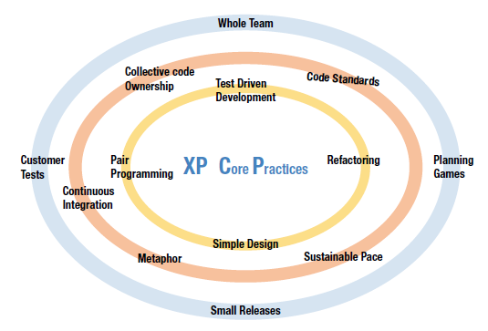

Metodologia de Desenvolvimento de Software
Histórico de Revisão
| Data | Versão | Descrição | Autor(es) |
|---|---|---|---|
| 11/09/2020 | 0.1 | Criação do Documento | Mateus Sousa |
| 09/10/2020 | 1.0 | Adiciona a metodologia | Gabriel Filipe |
| 10/12/2020 | 2.0 | Criação do documento de metodologia | Gabriel Filipe |
1) Introdução
As definições modernas de desenvolvimento de software ágil evoluíram a partir da metade de 1990 como parte de uma reação contra métodos tradicionais "pesados", caracterizados por uma regulamentação significante, regimentação e micro gerenciamento aplicada pelo modelo "cascata" de desenvolvimento. O processo originou-se da visão de que o modelo em cascata era muito burocrático, lento e contraditório a forma usual com que os engenheiros de software sempre realizaram trabalho com eficiência.
Em 2001, membros proeminentes da comunidade de software se reunem em Snowbird e publicam o "Manifesto ágil", documento que reúne os princípios e práticas dos métodos de desenvolvimento ágil. Logo em seguida, a Agile Alliance, uma organização não lucrativa que promove o desenvolvimento ágil é formada [1]. Ambos surgem com o intuito de "restaurar a credibilidade à palavra método" dentro do contexto de desenvolvimento de software [9].
2) Métodos ágeis

Os métodos ágeis são uma alternativa à gestão tradicional de projetos, eles nasceram nos braços do desenvolvimento de software, mas hoje podem ser aplicados a qualquer tipo de projeto (inclusive os que não se remetem ao desenvolvimento de software). Assim, os métodos ágeis vem ajudando muitas equipes a encarar a imprevisibilidades dentro de um projeto através de entregas incrementais e ciclos iterativos. Os métodos ágeis passaram a ser uma alternativa aos métodos conhecidos como cascata, tradicionais, pesados ou clássicos [2].
Basicamente, os métodos ágeis são um conjunto de práticas eficazes que se destinam a permitir a entrega rápida e de alta qualidade do produto, tendo uma abordagem de negócios que alinha o desenvolvimento do projeto com as necessidades do cliente e os objetivos da empresa, além de incentivar a inspeção e adaptação frequente e, o auto-gerenciamento e a comunicação frequente dos membros da equipe do projeto [2].
São consideradas métodos ou frameworks ágeis [3][4]:
- SCRUM;
- Scaled Agile Framework (SAFe);
- Feature Driven-Development (FDD);
- Test Driven Development (TDD);
- eXtreme Programming (XP);
- IBM Rational Unified Process (IRUP);
- Dynamic Systems Development Method (DSDM);
- Microsoft Solutions Framework (MSF);
- Adaptative Software Development (ASD);
- Entre outros...
3) Métodos ágeis adaptáveis

Pesquisas empíricas mostram que métodos tradicionais usados no desenvolvimento de software são bastante limitados e que, os desenvolvedores que fazem uso de tais métodos tendem a usar combinações de diferentes métodos e/ou partes específicas de um método, em vez de seguir todas as etapas exigidas por um método em particular [5][6]. Um outro estudo, descobriu que apenas 6% dos desenvolvedores seguem rigorosamente os métodos tradicionais [7]. Fowler afirma que a natureza burocrática de métodos tradicionais retarda o desenvolvimento de software a ponto de os desenvolvedores são forçados a abandoná-los [4][8].
Fazendo coro às afirmações acima e levando em consideração as necessidades do nosso projeto, foi-se necessário adaptar alguns métodos, escolhendo-se apenas algumas partes específicas de cada, a fim de se encontrar um "método X" no qual o nosso time atingisse uma eficiência e produtividade satisfatória. Dos métodos utilizados (e adaptados) foram :
- SCRUM;
- eXtreme Programming (XP);
- IBM Rational Unified Process (IRUP);
- Kanban;
Cada um dos métodos acima será brevemente descrito abaixo e, em seguida, apontaremos o que for utilizado de cada um deles.
3.1) Scrum:

Criada pelos desenvolvedores Ken Schwaber e Jeff Sutherland, SCRUM é método de gerenciamento ágil. Ele tem como base as equipes pequenas e multidisciplinares, os feedbacks constantes e a colaboração direta dos envolvidos.
O SCRUM deve ser visto como uma forma de orientar o trabalho de equipes com foco em resultados inteligentes e alinhados com as demandas existentes. Ele coloca a equipe do projeto preparada para entregar novidades continuamente. Além disso, amplia o alinhamento de expectativas entre os participantes no projeto, evitando baixa insatisfação.
Em outras palavras, o método SCRUM atua no gerenciamento de projetos, auxiliando no alcance de todos esses objetivos definidos durante as etapas de planejamento. Com o maior alinhamento entre os times, torna-se mais fácil avaliar o que deve ser feito para evitar desperdícios e melhorar o resultado final. Ou seja, a metodologia SCRUM amplia a habilidade de profissionais de gestão para entregarem os resultados esperados pelo cliente.
Uma das características mais marcantes do SCRUM é que cada membro do projeto possuí um papel e responsabilidades bem definidas. Cada membro da equipe conhece sua função no time, facilitando muito o andamento dos projetos. Quando cada profissional sabe exatamente quais são suas tarefas e obrigações, a equipe gerencia a si mesma naturalmente, sem precisar de cobranças externas constantes [10].
Dentro de uma equipe de projeto que atua no ambiente SCRUM, há vários papéis que são formulados para orientar o fluxo de trabalho e garantir que cada um esteja pronto para atuar de modo autônomo.
3.1.1) Eventos do método:
-
Sprints (com duração bem definida);
-
Daily SCRUM;
-
Sprint Planning;
-
Sprint Review;
-
Sprint Retrospective;
-
Time-box meetings;
3.1.2) Eventos do método utilizados no projeto:
-
Sprints (de 1 semana);
-
Daily SCRUM **;
-
Sprint Planning;
-
Sprint Retrospective;
** No começo do desenvolvimento do projeto adotamos o uso das dailies rigorasamente. Todavia, com o decorrer do projeto, foi identificado que o time estava com bastante dificuldade de manter a sua prática e, por isso, um pouco antes da R2, passou a não ser mais realizada.
3.2) eXtreme Programming (XP):

Criada em 1997, o XP é um método de desenvolvimento de software, leve, não é prescritivo, e procura fundamentar as suas práticas por um conjunto de valores que serão vistos posteriormente no artigo. O XP, diferentemente do que muito pensam, também pode ser adotar por desenvolvedores médios e não apenas por desenvolvedores experientes [12].
O objetivo principal do XP é levar ao extremo um conjunto de práticas que são ditas como boas na engenharia de software e suas práticas são fundamentadas nos valores abaixo:
- Comunicação
- Coragem
- Feedback
- Respeito
- Simplicidade
3.2.1) Práticas do método:
O XP foi descrito como tendo 12 práticas, agrupadas em quatro áreas [11]:
Fine-scale feedback
- Pair programming;
- Planning game;
- Test-driven development;
- Whole team;
Continuous process
- Continuous integration;
- Refactoring or design improvement;
- Small releases;
Shared understanding
- Coding standards;
- Collective code ownership;
- Simple design;
- System metaphor;
Programmer welfare
- Sustainable pace;
3.2.2) Práticas do método utilizados no projeto:
Das 12 práticas acima descritas, 7 foram utilizadas. São elas:
Fine-scale feedback
- Pair programming;
- Planning game;
- Whole team;
Continuous process
- Continuous integration;
- Refactoring or design improvement;
Shared understanding
- Coding standards;
- Collective code ownership;
3.3) IBM Rational Unified Process (IRUP):

O RUP foi criado pela Rational Software Corporation, e adquirida pela IBM tempos depois, ganhando um novo nome IRUP (IBM Rational Unified Process). O IRUP fornece técnicas a serem seguidas pelos membros da equipe de desenvolvimento de software com o objetivo de aumentar a sua produtividade no processo de desenvolvimento.
O IRUP usa a abordagem da orientação a objetos em sua concepção e é projetado e documentado utilizando a notação UML (Unified Modeling Language) para ilustrar os processos em ação. Também, o IRUP se esforça em consolidar estruturas de código a fim de estimular a padronização dos procedimentos normalmente adotados.
É um processo considerado pesado e preferencialmente aplicável a grandes equipes de desenvolvimento e a grandes projetos, porém o fato de ser amplamente customizável torna possível que seja adaptado para projetos de qualquer escala. Para a gerência do projeto, o RUP provê uma solução disciplinada de como assinalar tarefas e responsabilidades dentro de uma organização de desenvolvimento de software [13].
3.3.1) Práticas do método:
Dentre as principais práticas do RUP podemos citar:
-
Gestão de Requisitos;
-
Uso de Arquitetura Baseada em Componentes;
-
Uso de Software de Modelos Visuais;
-
Verificação da Qualidade do Software;
-
Gestão e Controle de Mudanças do Software;
3.3.2) Práticas do método utilizados no projeto:
Em nosso projeto, todas as 5 acima foram utilizadas:
-
Gestão de Requisitos;
-
Uso de Arquitetura Baseada em Componentes;
-
Uso de Software de Modelos Visuais **;
-
Verificação da Qualidade do Software;
-
Gestão e Controle de Mudanças do Software;
** Sobre o uso de modelos visuais de software, vale ressaltar que a carga completa proporcionada pelo UML (Unified Modeling Language) é bastante alta e, por isso, foram escolhidas apenas as representações que o time do projeto identificou como mais didáticas.
3.4) Kanban:

O Kanban pode ser utilizado sozinho, sem a necessidade de outros frameworks ou métodos. David J. Anderson descreve o Kanban como um caminho alternativo para a agilidade. Porém, o método também pode ser usado para apoiar outros métodos.
A perspectiva baseada em fluxo do Kanban pode melhorar e complementar o framework Scrum e sua implementação. Times, por exemplo, podem aplicar o Kanban tanto se estiverem começando a usar o Scrum quanto se já o utilizam há muito tempo.
Utilizando o Kanban para visualizar o trabalho de novas formas, um "Time Scrum" pode aplicar o conjunto de práticas do Kanban para otimizar o valor da entrega de maneira mais efetiva. Essas práticas se apoiam e expandem os princípios do pensamento Lean, fluxo de desenvolvimento de produtos e teoria das filas abaixo descritas [14].
3.4.1) Práticas do método:
-
Visualização do Fluxo de Trabalho;
-
Limitando o Trabalho em Progresso (WIP);
-
Gerenciamento ativo dos itens de trabalho em andamento;
-
Inspecionando e adaptando sua definição de “Fluxo de Trabalho”;
3.4.2) Práticas do método utilizados no projeto:
Das práticas citadas acima, todas foram seguidas pelo time rigorosamente.
4) PMBOK
Além da adaptação dos métodos ágeis descrita acima, o grupo também usufruiu do guia PMBOK para o monitoramento do time e gestão do projeto em si. O PMBOK é uma espécie de enciclopédia sobre gerenciamento de projetos publicada. Sua publicação é regularmente revisada pelo PMI (Project Management Institute). Sua função é padronizar e difundir as práticas mais eficientes, testadas e comprovadas por gerentes de projetos do mundo inteiro em um só guia.
O PMBOK também fornece e promove um vocabulário comum para se discutir, escrever e aplicar o gerenciamento de projetos possibilitando o intercâmbio eficiente de informações entre os profissionais de gerência de projetos.
Em sua sexta edição (2017), o PMBOK reconhece 49 processos que recaem em 5 grupos de processos e 10 áreas de conhecimento que são típicas em quase todas áreas de projetos [15].
4.1) Processos de gerenciamento utilizados:
Dentre os 49 processos reconhecidos pela sexta edição do guia PMBOK, o time se preocupou em utilizar somente os que foram identificado como cabíveis ao projeto e, alguns deles, são mostrados nos tópicos abaixo:
- Desenvolver o termo de abertura do projeto;
- Desenvolver o plano de gerenciamento do projeto;
- Orientar e gerenciar o trabalho do projeto;
- Monitorar e controlar o trabalho do projeto;
- Realizar o controle integrado de mudanças;
- Encerrar o projeto;
- Coletar os requisitos;
- Criar a EAP;
- Validar o escopo;
- Controlar o escopo;
- Planejar o gerenciamento do Cronograma;
- Definir as atividades;
- Sequenciar atividades;
- Estimar os recursos das atividades;
- Estimar as durações das atividades;
- Desenvolver o cronograma;
- Controlar o cronograma;
- Planejar o gerenciamento da qualidade;
- Controlar a qualidade;
- Mobilizar a equipe do projeto;
- Desenvolver a equipe do projeto;
- Gerenciar a equipe do projeto;
- Planejar o gerenciamento das comunicações;
- Gerenciar as comunicações;
- Planejar o gerenciamento dos riscos;
- Identificar os riscos;
- Realizar a análise quantitativa dos riscos;
- Planejar as respostas aos riscos;
- Controlar os riscos;
- Identificar partes interessadas;
- Gerenciar o envolvimento das partes interessadas;
- Controlar o envolvimento das partes interessadas;
5) Análises de Desempenho do Time
Para mensurar o desempenho, produtividade e a evolução da equipe dentro do projeto foram utilizados alguns artefatos. Foram eles:
-
Burndown:
Tem como objetivo monitorar as atividades (issues) do projeto. -
Burndown de Riscos:
Tem como objetivo monitorar os riscos do projeto, a fim de evitar complicações e maiores problemas ao longo das sprints. -
Velocity:
Tem como objetivo verificar a média de pontos que o grupo consegue entregar por sprint. Atuará como ferramenta para análise da capacidade de desenvolvimento da equipe. Ele será elaborado ao fim de cada sprint e é consultado no planejamento da sprint seguinte. -
Gráfico de Contribuições por Repositório:
Tem como objetivo verificar a constância das contribuições. Este gráfico é proporcionado pelo GitHub. -
Quadro de Conhecimentos:
Tem como objetivo monitorar a evolução do conhecimento dos membros da equipe nas perante a exposição dos mesmos à tecnologias novas. -
Planilha de Horas:
Tem como objetivo monitorar a carga de trabalho de cada membro.
Através da análise desses pontos acima o time consegue planejar as próximas atividades, identificar problemas e gargalos durante o processo de desenvolvimento de software, e propor intervenções quando cabíveis.
7) Referências
[1] Desenvolvimento Ágil de Software
[2] O que são métodos ágeis
[3] Métodologias ágeis
[4] Brian Fitzgerald, Gerard Hartnett & Kieran Conboy (2006) Customising agile methods to software practices at Intel Shannon, European Journal of Information Systems, 15:2, 200-213, DOI: 10.1057/palgrave.ejis.3000605
[5] FITZGERALD B (1996) Formalised systems development methodologies: a critical perspective. Information Systems Journal 6, 3–23.
[6] HIDDING G (1996) Method engineering: experiences in practice. In Method Engineering: Principles of Method Construction and Tool Support (BRINKKEMPER SKL and WELKE R, Eds), Kluwer, London.
[7] FITZGERALD B (2000) Systems development methodologies: the problem
of tenses. Information Technology and People 13, 13–22.
[8] FOWLER M (2000) Put your process on a diet. Software Development 8(12),
32–36.
[9] FOWLER M and HIGHSMITH J (2001) The agile manifesto. Software Development, August.
[10] O que é SCRUM
[11] Extreme Programming Practices
[12] Introdução ao Extreme Programming (XP)
[13] IBM Rational Unified Process
[14] Kanban
[15] Project Menagement Body of Knowledge